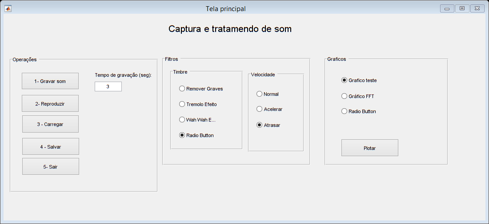

Contents
function varargout = Tela(varargin) % TELA MATLAB code for Tela.fig % TELA, by itself, creates a new TELA or raises the existing % singleton*. % % H = TELA returns the handle to a new TELA or the handle to % the existing singleton*. % % TELA('CALLBACK',hObject,eventData,handles,...) calls the local % function named CALLBACK in TELA.M with the given input arguments. % % TELA('Property','Value',...) creates a new TELA or raises the % existing singleton*. Starting from the left, property value pairs are % applied to the GUI before Tela_OpeningFcn gets called. An % unrecognized property name or invalid value makes property application % stop. All inputs are passed to Tela_OpeningFcn via varargin. % % *See GUI Options on GUIDE's Tools menu. Choose "GUI allows only one % instance to run (singleton)". % % See also: GUIDE, GUIDATA, GUIHANDLES % Edit the above text to modify the response to help Tela % Last Modified by GUIDE v2.5 01-Jun-2019 14:52:10 % Begin initialization code - DO NOT EDIT clc; gui_Singleton = 1; gui_State = struct('gui_Name', mfilename, ... 'gui_Singleton', gui_Singleton, ... 'gui_OpeningFcn', @Tela_OpeningFcn, ... 'gui_OutputFcn', @Tela_OutputFcn, ... 'gui_LayoutFcn', [] , ... 'gui_Callback', []); if nargin && ischar(varargin{1}) gui_State.gui_Callback = str2func(varargin{1}); end if nargout [varargout{1:nargout}] = gui_mainfcn(gui_State, varargin{:}); else gui_mainfcn(gui_State, varargin{:}); end % End initialization code - DO NOT EDIT % --- Executes just before Tela is made visible. function Tela_OpeningFcn(hObject, eventdata, handles, varargin) % This function has no output args, see OutputFcn. % hObject handle to figure % eventdata reserved - to be defined in a future version of MATLAB % handles structure with handles and user data (see GUIDATA) % varargin command line arguments to Tela (see VARARGIN) % Choose default command line output for Tela handles.output = hObject; % Update handles structure guidata(hObject, handles); % UIWAIT makes Tela wait for user response (see UIRESUME) % uiwait(handles.figure1); % --- Outputs from this function are returned to the command line. function varargout = Tela_OutputFcn(hObject, eventdata, handles) % varargout cell array for returning output args (see VARARGOUT); % hObject handle to figure % eventdata reserved - to be defined in a future version of MATLAB % handles structure with handles and user data (see GUIDATA) % Get default command line output from handles structure varargout{1} = handles.output; % --- Executes on button press in btnGravaSom. function btnGravaSom_Callback(hObject, eventdata, handles) % hObject handle to btnGravaSom (see GCBO) % eventdata reserved - to be defined in a future version of MATLAB % handles structure with handles and user data (see GUIDATA) %------------- variaveis para gravar voz Fs = 44100 ; %freq padrao captura de bits nBits = 16 ; % bits para gravação nChannels = 2 ; % 1= mono, 2= stereo ID = -1; % default audio input device %---------------- tempogravacao = str2num(get(findobj(gcf, 'Tag','edtTempoGravacao'),'String')); disp(strcat('Tempo de gravação: ',num2str(tempogravacao))); som = GravaSom(Fs, nBits, nChannels,ID,tempogravacao); somArray = getaudiodata(som); handles.Som = somArray; handles.Fs = Fs; handles.SomOriginal = handles.Som; guidata(hObject,handles); % --- Executes on button press in btnReproduzir. function btnReproduzir_Callback(hObject, eventdata, handles)
% hObject handle to btnReproduzir (see GCBO) % eventdata reserved - to be defined in a future version of MATLAB % handles structure with handles and user data (see GUIDATA)
Aplicando Filtros %Bale
if get(handles.rbRemoverGraves,'Value') == 1 somSemGraves = removerGrave(handles.Som,handles.Fs); handles.Som = somSemGraves; end if get(handles.rbTremolo,'Value') == 1 somTremoloArray = tremolo(handles.Som,handles.Fs); handles.Som = somTremoloArray; end if get(handles.rbWah,'Value') == 1 somWahArray = wah_wah(handles.Som,handles.Fs); handles.Som = somWahArray; end
%Controle de radio buttons % normal if get(handles.rbNormal,'Value') == 1 reproduzSom(handles.Som, handles.Fs); % Botar SomOriginal para normal %acelerado elseif get(handles.rbAcelerar,'Value') == 1 handles.Fs = 80000; reproduzSom(handles.Som, handles.Fs); %atrasar else get(handles.rbAtrasar,'Value') == 1 handles.Som = reamostarSinal(handles.Som, 5, handles.Fs); handles.FsAtrasar = handles.Fs/5; reproduzSom(handles.Som,handles.Fs); end; % --- Executes on button press in btnFiltros.
function btnFiltros_Callback(hObject, eventdata, handles) % hObject handle to btnFiltros (see GCBO) % eventdata reserved - to be defined in a future version of MATLAB % handles structure with handles and user data (see GUIDATA) % --- Executes on button press in btnSair. function btnSair_Callback(hObject, eventdata, handles) % hObject handle to btnSair (see GCBO) % eventdata reserved - to be defined in a future version of MATLAB % handles structure with handles and user data (see GUIDATA) %sai da tela %selection = questdlg (' Deseja sair? ', 'Fechar programa', ' Sim ' , 'Não ',' Sim '); close all; function edtTempoGravacao_Callback(hObject, eventdata, handles) % hObject handle to edtTempoGravacao (see GCBO) % eventdata reserved - to be defined in a future version of MATLAB % handles structure with handles and user data (see GUIDATA) % Hints: get(hObject,'String') returns contents of edtTempoGravacao as text % str2double(get(hObject,'String')) returns contents of edtTempoGravacao as a double % --- Executes during object creation, after setting all properties. function edtTempoGravacao_CreateFcn(hObject, eventdata, handles) % hObject handle to edtTempoGravacao (see GCBO) % eventdata reserved - to be defined in a future version of MATLAB % handles empty - handles not created until after all CreateFcns called % Hint: edit controls usually have a white background on Windows. % See ISPC and COMPUTER. if ispc && isequal(get(hObject,'BackgroundColor'), get(0,'defaultUicontrolBackgroundColor')) set(hObject,'BackgroundColor','white'); end % --- Executes on button press in rbGrafico1. function rbGrafico1_Callback(hObject, eventdata, handles) % hObject handle to rbGrafico1 (see GCBO) % eventdata reserved - to be defined in a future version of MATLAB % handles structure with handles and user data (see GUIDATA) % Hint: get(hObject,'Value') returns toggle state of rbGrafico1 % --- Executes on button press in rbFft. function rbFft_Callback(hObject, eventdata, handles) % hObject handle to rbFft (see GCBO) % eventdata reserved - to be defined in a future version of MATLAB % handles structure with handles and user data (see GUIDATA) % Hint: get(hObject,'Value') returns toggle state of rbFft % --- Executes on button press in radiobutton10. function radiobutton10_Callback(hObject, eventdata, handles) % hObject handle to radiobutton10 (see GCBO) % eventdata reserved - to be defined in a future version of MATLAB % handles structure with handles and user data (see GUIDATA) % Hint: get(hObject,'Value') returns toggle state of radiobutton10 % --- Executes on button press in btnPlotar. function btnPlotar_Callback(hObject, eventdata, handles) % hObject handle to btnPlotar (see GCBO) % eventdata reserved - to be defined in a future version of MATLAB % handles structure with handles and user data (see GUIDATA) %Controle de radio buttons % grafico 1, configura e abre a tela de graficos if get(handles.rbGrafico1,'Value') == 1 %PASSANDO O HANDLES(ESTRUTURA DE DADOS DESSA TELA) E ABRINDO A TELA DE %GRAFICOS. NA TELA DE GRAFICOS UTILIZO ESSES DADOS PARA MONTAR O %GRAFICO %TESTE DE 'PARAMETRO' DE HANLDES ENTRE GUI's handles.TituloGrafico = 'Igor Corona' %Attualiza a estrutura handles guidata(hObject, handles); %Abre a tela de graficos % %gtrafico 2 % elseif get(handles.rbAcelerar,'Value') == 1 % reproduzSom(handles.Som, 85000); % % % %grafico 3 % else get(handles.rbAtrasar,'Value') == 1 % reproduzSom(handles.Som, 35000); end if get(handles.rbFft,'Value') == 1 handles.TituloGrafico = 'FFT' handles.SomOriginal = handles.Som; handles.Som = abs(fft(handles.SomOriginal)); % y = abs(fft(handles.SomOriginal)); % save 'dados.mat',y; guidata(hObject, handles); %atualiza a interface Graficos(handles); end % --- Executes on button press in btnSalvar. function btnSalvar_Callback(hObject, eventdata, handles) % hObject handle to btnSalvar (see GCBO) % eventdata reserved - to be defined in a future version of MATLAB % handles structure with handles and user data (see GUIDATA) %Salva o som em um arquivo.mp4 na pasta raiz do projeto audiowrite ('Som.mp4', handles.Som, handles.Fs); disp('Arquivo salvo!'); validaSom(); % mensagem erro f = warndlg('Erro ao repproduzir. Grave um audio!','Reprodução'); function result= validaSom() result = isvalid(handles.Som); % --- Executes on button press in pbCarregar. function pbCarregar_Callback(hObject, eventdata, handles) [file,path] = uigetfile('*.mp3', 'Selecione o som'); pathFile = strcat(path,file); [x,Fs] = audioread(pathFile,'native'); somArray = getaudiodata(x); handles.Som = somArray;